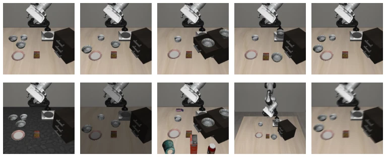
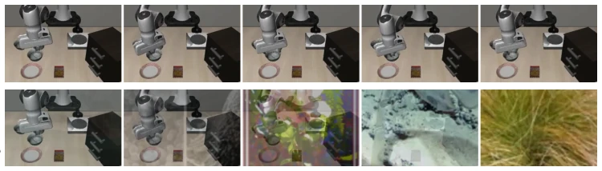
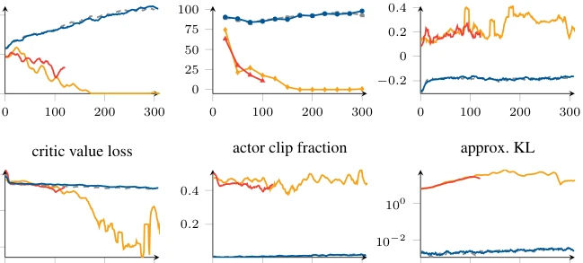
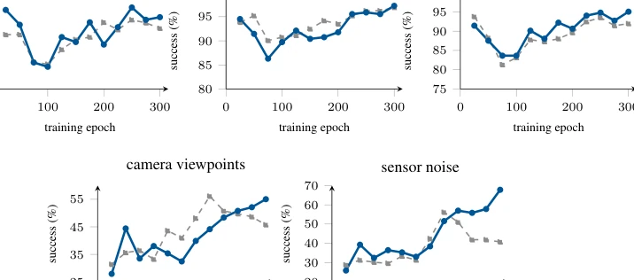

This paper undertakes a quite 'counter-intuitive' task. In the field of Visual Reinforcement Learning (Visual RL), it is customary to feed data augmentation (Data Augmentation) simultaneously to both Actor and Critic, as done by Almuzairee et al. (2024). However, upon reaching the VLA post-training stage, the authors found that this method directly leads to training collapse. Most ironically, augmenting only the Critic can actually significantly improve OOD generalization capability. This is like giving the referee sunglasses to watch the ball, while the player must see the ball clearly; as a result, the referee's judgment is more accurate, and the player does not get confused. Although the conclusion is simple and blunt, it indeed solves a major pain point in VLA deployment—visual robustness. However, since it is only run in simulation and only PPO is tested, whether this 'empirical insight' can be transferred to real robots or offline RL remains questionable. Additionally, language instruction augmentation was not tested, which is slightly regrettable.
研究动机Motivation
VLA 模型在真实世界部署时，面对光照、背景等视觉分布外（OOD）偏移往往表现脆弱。虽然 RL 后训练能提升执行能力，但 Liu et al. (2025b) 指出其对视觉鲁棒性的提升有限。现有视觉 RL 中的增强策略（如 Hansen et al., 2021; Almuzairee et al., 2024）多基于小型 CNN 编码器，直接迁移到拥有预训练 VLM 骨干的 VLA 上是否有效尚不明确。特别是 Actor-Critic 架构中增强注入的位置，以往认为增强两者更好，但在 VLA 中可能导致梯度传播问题或策略崩溃。本文旨在填补这一空白，系统研究增强在 VLA 后训练中的具体用法，避免盲目套用旧经验导致训练失败。
When VLA models are deployed in the real world, they often exhibit fragility when facing visual out-of-distribution (OOD) shifts such as lighting and background. Although RL post-training can improve execution capability, Liu et al. (2025b) point out that its improvement on visual robustness is limited. Existing augmentation strategies in visual RL (e.g., Hansen et al., 2021; Almuzairee et al., 2024) are mostly based on small CNN encoders, and it remains unclear whether they are effective when directly transferred to VLAs with pre-trained VLM backbones. Especially regarding the position of augmentation injection in the Actor-Critic architecture, it was previously believed that augmenting both is better, but in VLA it may cause gradient propagation issues or policy collapse. This paper aims to fill this gap, systematically studying the specific usage of augmentation in VLA post-training to avoid training failure caused by blindly applying old experiences.

Figure 2: Five visual perturbation axes of LIBERO-Plus. Each column shows the original base task on top and an out-of-distribution LIBERO-Plus perturbation below. Frames are the full main-camera observation after 20 timesteps with a random policy.
The overall process is based on PPO for post-training pre-trained VLA (π0.5 and GR00T N1.5). Training data comes from LIBERO-Spatial, evaluation uses OOD variants of LIBERO-Plus. The core innovation lies in the decoupling of the augmentation strategy: Rollout and evaluation stages always use clean (clean) observations, only Critic input is augmented during training updates (updates) stages, Actor input remains clean. Augmentation types include Random Overlay (mixed with ImageNet images, strength α) and Random Shift (random cropping). Experiments compared augmentation modules (Actor/Critic/Both), type combinations, and strength. For the Flow-matching action head, Flow-SDE is used to compute log-prob to adapt to PPO. The key mechanism lies in the Critic learning value estimation on augmented observations, thereby generating a more robust Advantage signal ($ ilde{A}_t$) to guide the Actor, while the Actor itself does not directly receive augmented pixels, avoiding feature destruction. This design preserves the pre-trained feature integrity of the VLM backbone, affecting the policy only indirectly through Critic gradients.

Figure 4: Random overlay across the full strength range. Five observations from one LIBERO- Spatial episode, as the policy receives them (top) and after blending with an ImageNet image (bottom), at the α below each column. Every column draws its own overlay, randomly resized, cropped and flipped before blending. Our main experiments use α = 0.5, the middle column; Section 4.3 varies it. Rollouts and evaluations always use the clean view, while updates (may) receive augmented versions.
OOD success rate is tested on the LIBERO-Plus benchmark. Baseline is no-augmentation PPO. Results show that for the π0.5 model, Critic-only augmentation increased OOD success rate by 7.8 points (Overlay), while augmenting Actor caused training collapse (success rate approaching 0). GR00T N1.5 follows this pattern as well, Critic-only Shift augmentation improved by 10.0 points. Ablation studies show that Overlay significantly improves robustness to sensor noise, while Shift improves better for camera view and layout. Augmentation strength α is best around 0.5, but the 0.1-0.9 interval is all better than no augmentation. IND success rate was not negatively affected, and some tasks even improved.

Figure 6: Training dynamics under each augmentation placement. The four π0.5 placements of Table 1. Per-epoch traces are smoothed with a centered nine-epoch moving average; evaluations are plotted as measured.
其他图片Other Figures

Figure 5: Out-of-distribution success during post-training, per perturbation axis. The unaug- mented π0.5 PPO baseline against critic-only overlay augmentation at α = 0.5, on each visual axis separately.